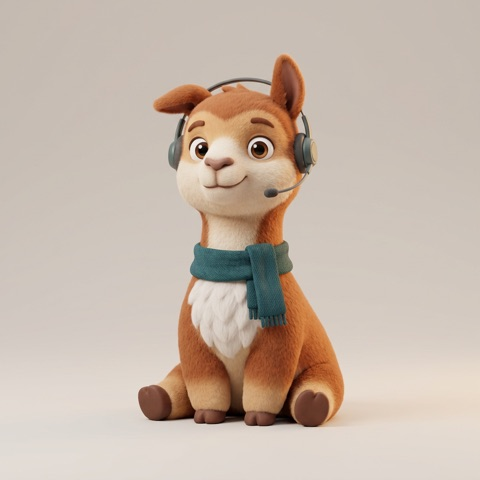
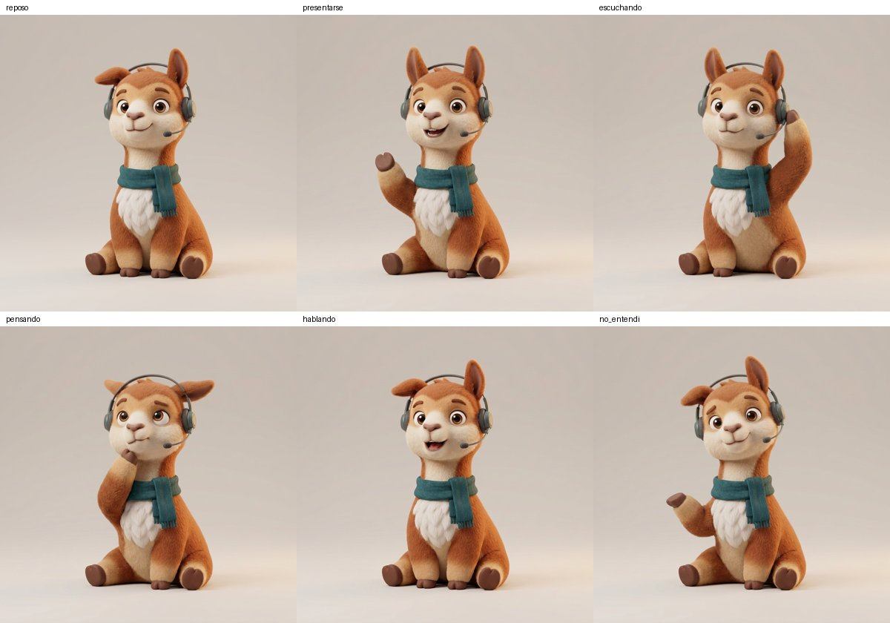
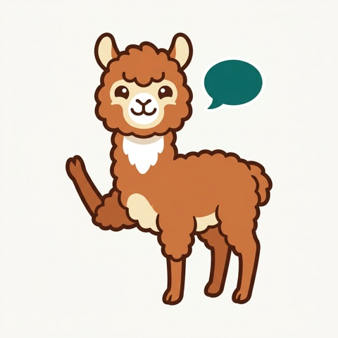
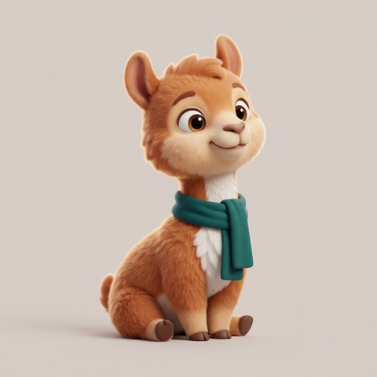
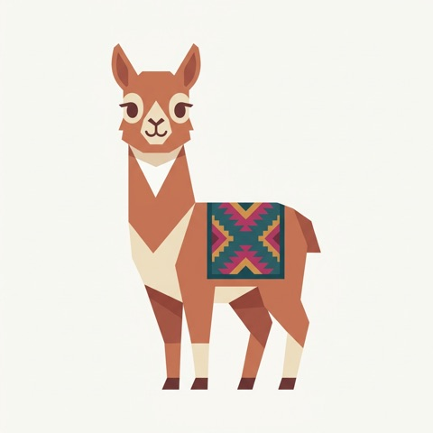
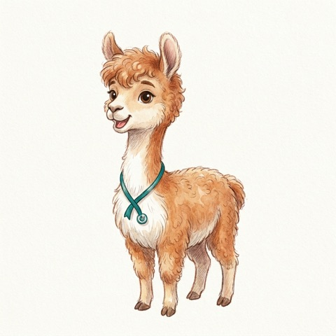

La enfermera habla en castellano y Chaski lo dice en quechua chanka. El paciente responde, Chaski detecta que es quechua y se lo dice a ella en castellano. Antes de hablar se audita: si una dosis o una fecha cambió, no lo dice.
Para quién: el personal de salud de la posta de Pilpichaca (Huancavelica), y sus pacientes quechuahablantes en cualquier atención. La mamá de Freddy es la única enfermera que habla quechua ahí. En toda Huancavelica hay 52 servidores bilingües certificados.
Una conversación de ejemplo en la consulta. El celular está entre la enfermera y el paciente.
Escucha a Chaski por el parlante del celular de la enfermera, en su idioma, y responde hablando. Chaski reconoce solo si habló en quechua o en castellano.
Sin muletillas, números explícitos. No inventa ni quita datos.
Traduce al chanka, otra llamada retraduce a ciegas, código compara dosis, horas, días y citas.
Solo, sin botones.
El modelo que ajusta Ricardo con las voces de las familias.
Lo dice en castellano con su nivel de seguridad. Si no entiende, pide repetir: nunca inventa.
Los modelos de voz son los oídos y la boca. Claude es el que entiende, ve y decide. Siete trabajos, todos centrales:
Y las cruza con lo que dijo la enfermera: si ella dijo paracetamol y la caja dice ibuprofeno, avisa.
Elige entre los intentos del reconocimiento usando el contexto de la consulta. Se mide con y sin Claude.
Estilo Wispr Flow.
Retraducción a ciegas + código. Construido.
Compara lo repetido con la indicación.
Castellano para la historia clínica, quechua para el paciente.
Pedir repetir, avisar a la enfermera o seguir.
La app (B) funciona con modelos que ya existen. Lo técnicamente difícil es el segundo ciclo: lograr que entiendan y hablen chanka de posta, y medirlo con honestidad.
| Pieza | Qué usamos | Estado |
|---|---|---|
| Ver receta y caja | Claude visión | sábado |
| Traducir, entender, auditar | Claude Opus 5Python | auditoría hecha · 20 pruebas |
| Entender voz quechua | Meta Omnilingual ASR quyKenLMajuste fino | sábado |
| Entender voz castellano | Whisper u Omnilingual spa | por decidir |
| Detectar idioma | facebook/mms-lid-512 | incluye quy y spa · verificado |
| Hablar quechua | facebook/mms-tts-quy | voz base probada |
| Hablar castellano | Cartesia | decidido · suma su track |
| Entrenar y servir modelos | VM de Ricardo · GPU 40 GB | probar hoy |
| La app | iOS nativa · ExpoTestFlight | decidido · plan B: Expo en el iPhone de Freddy |
| Conexión app ↔ modelos | VM por HTTPS público | sábado temprano |
| # | Decisión | Por qué |
|---|---|---|
| D4 | Quechua en salud | La mamá de Freddy es la única enfermera quechuahablante de la posta |
| D5 | Ajuste fino con voces de las familias, medido antes y después | Da el núcleo técnico |
| D6 | Chaski sobre corredores de extorsión | El modelo de escalamiento no le ganó al baseline |
| D8 | Salud general, no solo gestantes | La comunidad es la posta |
| D9 | Usuaria principal: el personal de salud | Se usa en la consulta, cara a cara |
| D10 | App de intérprete con voz en los dos sentidos | Conversación en vivo, no WhatsApp |
| D11 | Detección automática de idioma | Nadie toca un botón para cambiar de idioma |
| D12 | Entender la intención, estilo Wispr Flow | Lo dicho a medias llega claro de los dos lados |
| D13 | SOT.md es la fuente de verdad; esta página se sincroniza con él | Pedido de Freddy |
| D14 | App nativa de iOS por TestFlight | Freddy tiene la cuenta Apple Developer |
| D15 | El modelo de Claude se elige midiendo velocidad y acierto | En vivo, la espera importa tanto como el acierto |
| D16 | Cartesia para la voz en castellano | Sus créditos y su track |
| D17 | Avatar que presenta Chaski | Más familiar para el paciente |
| D18 | La mamá de Freddy prueba por videollamada y, si puede, aparece en el pitch | Usuaria real, voz real |
| D19 | Claude es el núcleo: visión, corrección, intención, auditoría, juicio, resumen, orquestación | Claude tiene que ser central, no un adorno |
| D20 | El avatar es una vicuña juguetona y animada, con otro nombre | Elección de Freddy |
| D21 | Tareas por persona en plan/tareas.md; Ricardo arma las frases de grabación | Seguimiento claro |
| D24 | Paleta «Chaski + textil»: crudo, teal para acciones, canela para quechua, rojo solo para bloqueo, una franja textil | Reutiliza lo hecho, la más segura, combina con Chaski |
| D25 | Cuadernillo: escribir la frase en quechua y leerla en voz alta; traducción con NLLB-200 ajustado | Traducir y hablar necesitan texto escrito alineado con el audio |
| D31 | Diseño cerrado: L + micrófono inti, cuatro anillos concéntricos con rayos escalonados que respiran, ondulan con la voz y giran al pensar | Elección de Freddy con su referencia de un inti andino |
| D29 | UI final = opción L (D + I): Chaski escalonado en el marco multicolor, chakana en el micrófono, crucecitas como componentes, y movimiento atado a la voz real | Elección de Freddy; que la persona se sienta escuchada sin perder legibilidad |
| D30 | El producto se llama Chaski: app, repo, carpeta, código y documentación. La vicuña y la app comparten nombre | Decisión de Freddy; Chaski lleva el mensaje de un idioma al otro |
| D28 | La identidad visual sale de las mantas andinas: franjas y motivos tejidos en bandas de identidad, nunca dentro del contenido | Pedido de Freddy con sus referencias; el contenido queda limpio para la seguridad |
| D27 | Chaski es para los dos lados: personal de salud y paciente. Onboarding idioma → nombre → rol; interfaz en el idioma elegido; el rol cambia el prompt y el resumen | Un paciente que no habla castellano también merece el resumen y la auditoría |
| D26 | La UI se construye sobre el tablero de Pencil, con 11 ajustes para el flujo real (pensando, ensayo en ámbar, tocar para hablar, historial) | Elección de Freddy; los ajustes salen de los tiempos medidos |
| D23 | Foco: traducción literal + ajuste fino de reconocimiento y voz; los modos «mediado» y «preguntas al intérprete» van al backlog | Lo que se puede hacer bien en 30 horas |
| D22 | El avatar es Chaski: vicuña 3D con audífonos de intérprete | Se entiende de un vistazo que traduce |
| # | Por decidir | Recomendación |
|---|---|---|
| P2 | ¿Qué modelo de Claude en la conversación? | Medir Opus 5, Sonnet 5 y Haiku 4.5 en el mismo set; quedarse con el más rápido que no pierda acierto |
| P4 | Nombre final | Chaski, Rimanakuy, Uyariy, Chaski, Yanapay o Tinkuy · significado y escritura los confirma la mamá de Freddy |
| P6 | ¿La mamá de Freddy puede el domingo de 12:30 a 14:30 (Lima)? | Preguntarle hoy |
D1–D3 y D7 (track, repo, descarte de incendios, GPU) están en el SOT. P1 y P3 quedaron cerradas por D14 y D16.


Se presenta sola en quechua y tiene cinco estados. Se anima como Duolingo en versión de 36 horas: una imagen por estado de la misma vicuña, boca abierta o cerrada según el volumen del audio, y movimientos simples (respirar, parpadear, saltar).




Las opciones que se evaluaron antes de elegir:
Lo que dice la enfermera se traduce tal cual. Es el foco de este fin de semana (D23).
«Explícale que no deje el tratamiento». Chaski decide cómo decirlo para que el paciente lo entienda.
«¿Qué quiso decir con eso?». Chaski le responde a la enfermera, no lo traduce.
Dime por letra qué tiene sentido y qué no. Cada cambio entra primero a SOT.md y después a esta página, con la misma versión.
Fuente de verdad: SOT.md · tareas: plan/tareas.md · grabación: plan/recoleccion-de-voz.md